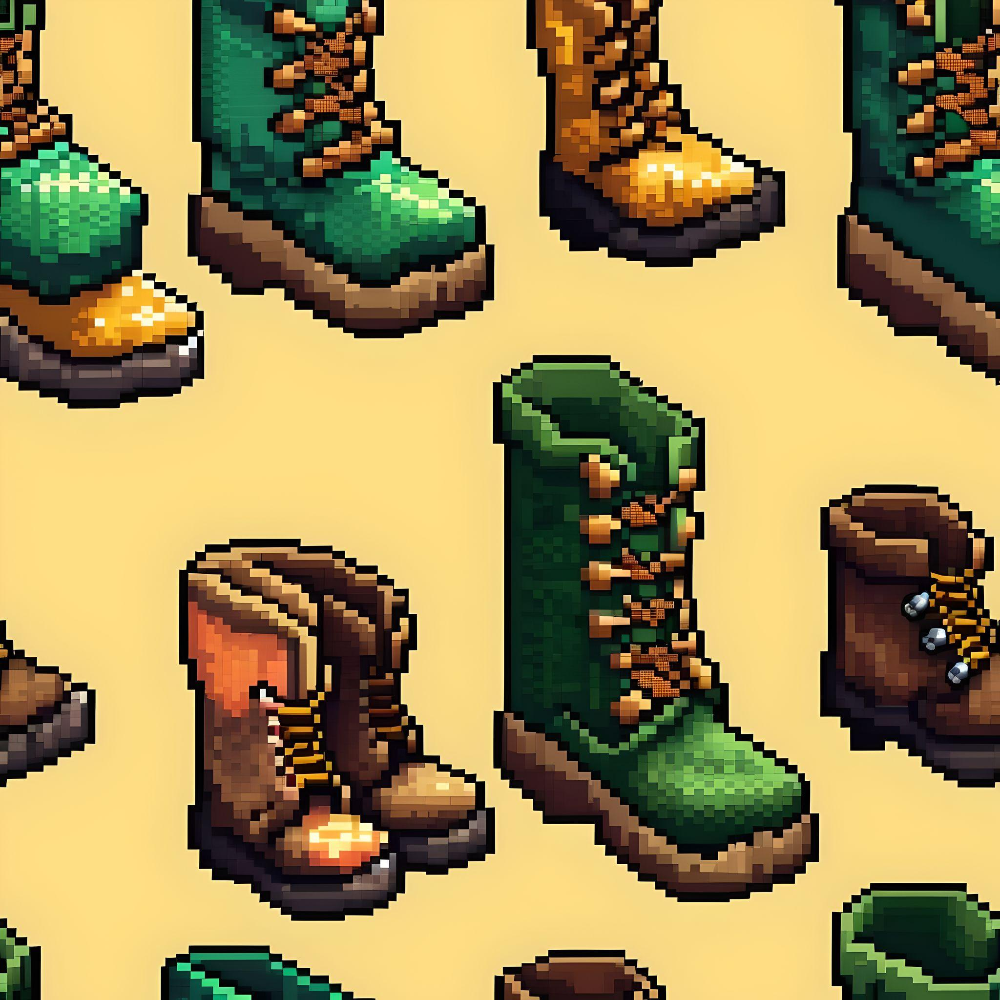
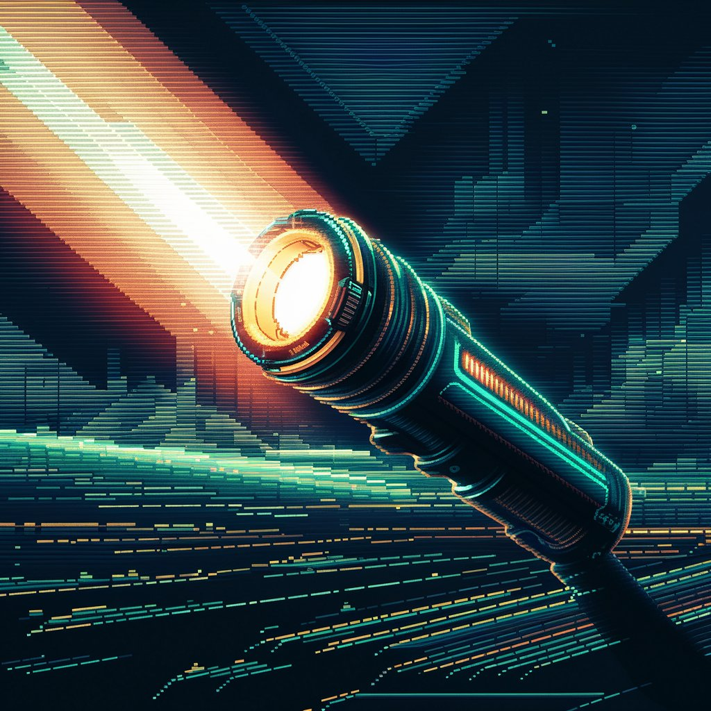
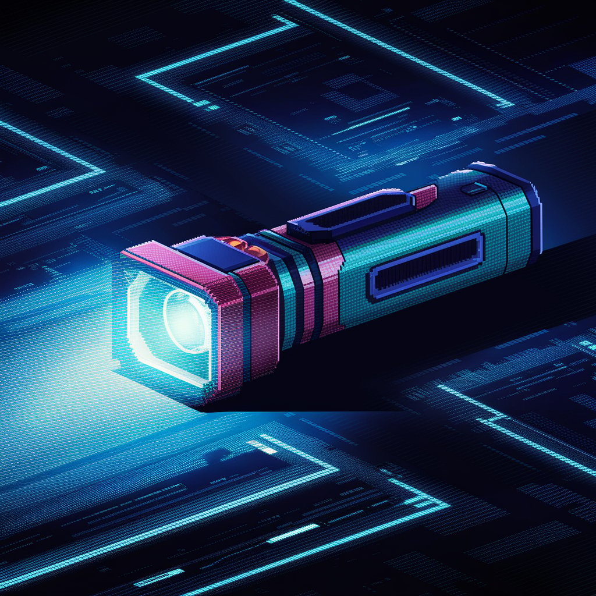

¿Por Qué el Xorret de Catí en Alicante es un Buen Ecosistema para los Alacranes ?
Xorret de Catí es un área natural ubicada en Petrer, Alicante, destacada por su impresionante belleza y valor ambiental. Integrada en el Paisaje Protegido de las Sierras de Maigmó y El Cid, esta zona montañosa está rodeada por las majestuosas cumbres de las Sierras del Maigmó y del Fraile, que superan los 1.200 metros de altitud, ofreciendo cresterías y cortados rocosos espectaculares.
El área recreativa de Xorret de Catí se encuentra en un entorno privilegiado, rodeado por la Sierra del Maigmó, los Rasos de Cati, la Crestera de Fraile y la Sierra del Cid. La vegetación predominante incluye bosques de pino carrasco y una variedad de plantas aromáticas como tomillo, romero, pebrella y rabo de gato.
Si eres un amante de la naturaleza y te fascinan las criaturas nocturnas, seguro te interesará saber por qué el Xorret de Catí, en la provincia de Alicante, es un lugar ideal para los alacranes. Este lugar mágico no solo ofrece paisajes impresionantes, sino que también es un hogar perfecto para estos arácnidos tan intrigantes.
¡Vamos a descubrir por qué!

Condiciones Climáticas Favorables
Clima Mediterráneo
El Xorret de Catí se encuentra en una región con clima mediterráneo, lo que significa veranos calurosos y secos e inviernos suaves. Los alacranes, como el *Buthus occitanus*, adoran este tipo de clima cálido y seco. Esta es una de las razones principales por las que prosperan en esta área.
Baja Humedad
Además, la baja humedad es perfecta para los alacranes. Prefieren ambientes secos ya que les ayuda a evitar problemas de deshidratación y reduce el riesgo de infecciones por hongos.

Estructura del Hábitat
Rocas y Grietas
El Xorret de Catí está lleno de rocas, grietas y hendiduras, que son refugios naturales ideales para los alacranes. Estos escondites les proporcionan protección durante el día, cuando son más vulnerables a los depredadores y a las condiciones climáticas extremas.
Suelos Arenosos y Pedregosos
Los suelos del área son perfectos para los alacranes. Los suelos arenosos facilitan que los alacranes puedan cavar y moverse, y las áreas pedregosas les proporcionan numerosos lugares para esconderse.

Disponibilidad de Presas
Abundancia de Insectos
La riqueza de flora en el Xorret de Catí atrae a muchos insectos, que son la principal fuente de alimento para los alacranes. Una abundancia constante de presas asegura que los alacranes siempre tengan algo para comer.
Biodiversidad
El ecosistema mediterráneo del Xorret de Catí es muy diverso, creando un entorno equilibrado donde los alacranes pueden prosperar junto con otras especies.

Refugio y Protección
Microclimas Locales
Las características geográficas del Xorret de Catí crean microclimas que pueden ofrecer refugios más frescos durante el calor del día, lo cual es beneficioso para los alacranes.
Vegetación Densa
La vegetación en el área proporciona cobertura adicional y ayuda a mantener la humedad del suelo en ciertos puntos, ofreciendo microhábitats donde los alacranes pueden encontrar agua y sombra.
_ Ruta _

Diatancia: 1.2km
Duracion estimada: 60 min
horario recomendado: apartir de 22:30
epoca ideal: julio, agosto
Dificultad: baja
desnivel: 1%

Descripcion de la ruta
Rutas Anchas y Seguras:Perfectas para los Más Miedosos. Si el miedo al peligro te impide explorar, nuestros caminos te ofrecen una experiencia mágica sin sorpresas ni sobresaltos.
¡Vive la aventura sin el drama!
COMO LLEGAR
Consejos para la ruta del Alacran en el Xorret de Catí.

Vestimenta
Calzado Adecuado
Es esencial para disfrutar de la experiencia de forma segura y cómoda. Se recomienda botas de senderismo o zapatos deportivos con buena tracción para evitar resbalones y asegurar un buen agarre en terrenos irregulares.
Duración: Este consejo es válido durante todo el recorrido.

Accesorio
Linterna
Una linterna será útil para desplazarnos por el paraje; sin embargo, no se recomienda usarla mientras observamos los alacranes, para que la experiencia sea más auténtica y mágica bajo el manto de la noche.
Duración: Invaluable en terrenos no señalizados.

Accesorio
Linterna de Luz Negra
Una linterna de luz negra es imprescindible para observar a los alacranes, ya que estos animales brillan bajo la luz ultravioleta. Asegúrate de llevar una linterna de este tipo para poder ver a los alacranes en todo su esplendor.
Duración: Especialmente útil durante las partes nocturnas de la ruta.

conciencia
Evitar Perturbar el Hábitat
Es fundamental respetar el hábitat natural de los alacranes. No toques ni muevas piedras o troncos, y mantén una distancia prudente. Recuerda que estamos como invitados en su hogar y debemos minimizar nuestro impacto.
Duración: En todo momento.
¿ Alacranes ?
exploraremos sus características, comportamientos y medidas de seguridad para convivir con estos fascinantes pero a veces peligrosos arácnidos.

Descripción:
Tamaño: Los adultos pueden medir entre 6 y 8 cm de largo.
Color: Su color varía del amarillo pálido al marrón claro, lo que les permite camuflarse bien en su entorno.
Características Distintivas: Poseen un par de pinzas delanteras, un cuerpo segmentado y una cola con un aguijón venenoso en el extremo.

Comportamiento:
Nocturno: Son más activos durante la noche, lo que hace ideal su observación en tours nocturnos.
Alimentación: Se alimentan principalmente de insectos y arañas. Utilizan sus pinzas para capturar a sus presas y el aguijón para inyectar veneno.
Reproducción: Las hembras llevan a los huevos dentro de su cuerpo y dan a luz a crías vivas, que se suben al dorso de la madre hasta su primera muda.

Veneno:
Toxicidad: El veneno del Buthus occitanus es moderadamente tóxico para los humanos, causando dolor, hinchazón y, en casos raros, síntomas más graves. Las picaduras no suelen ser mortales, pero requieren atención médica, especialmente en niños y personas alérgicas.

Conservación:
Estado de Conservación: No se considera en peligro de extinción, pero como todos los arácnidos, desempeña un papel importante en el ecosistema controlando la población de insectos.
Diferencias entre Machos y Hembras de Alacrán.

Tamaño Corporal
Machos: En muchas especies de alacranes, los machos tienden a ser más delgados y alargados en comparación con las hembras.
Hembras: Las hembras suelen tener un cuerpo más ancho y robusto.

Pectines (Peines)
Machos: Los machos tienen pectines (órganos sensoriales en forma de peine ubicados en la parte inferior del cuerpo) más grandes y con más dientes (pequeñas cerdas). Estos pectines se utilizan para detectar feromonas y vibraciones en el suelo.
Hembras: Las hembras tienen pectines más pequeños y con menos dientes en comparación con los machos.

Cola (Metasoma)
Machos: La cola del macho (el metasoma) tiende a ser más larga y delgada. En algunas especies, el quinto segmento de la cola es más alargado en los machos.
Hembras: La cola de la hembra suele ser más corta y robusta.

Palpos (Pinzas)
Machos: En ciertas especies, los machos tienen pinzas más largas y delgadas, lo que les ayuda durante el cortejo y en la lucha con otros machos.
Hembras: Las hembras generalmente tienen pinzas más cortas y fuertes.

Comportamiento de Cortejo
Machos: Los machos realizan un ritual de cortejo complejo que incluye la sujeción de las pinzas de la hembra y una "danza" en la que mueven a la hembra hacia adelante y hacia atrás.
Hembras: Las hembras participan en este ritual de cortejo pero no lo inician.
Datos Curiosos sobre el Alacrán.

Antiguos sobrevivientes
Los alacranes son uno de los animales más antiguos de la Tierra. Se cree que han existido durante más de 400 millones de años, lo que significa que sobrevivieron a eventos de extinción masiva y han evolucionado muy poco desde sus orígenes prehistóricos.

Resistencia extrema
Los alacranes son increíblemente resistentes a condiciones extremas. Pueden sobrevivir sin comida durante meses y resistir temperaturas extremas que van desde el frío del desierto hasta el calor abrasador.

Cazadores nocturnos
Son principalmente nocturnos, lo que significa que cazan y son más activos durante la noche. Esta adaptación les ayuda a evitar el calor extremo del día y a aprovechar la frescura de la noche para cazar insectos y otras pequeñas presas.

Veneno con propósito
El veneno del alacrán no solo sirve para defenderse y cazar, sino que también tiene propiedades médicas. Los científicos están investigando componentes del veneno del alacrán para desarrollar tratamientos para enfermedades como el cáncer y para crear analgésicos más efectivos.

Longevidad en el mundo arácnido
En comparación con otros arácnidos, los alacranes tienen una vida relativamente larga. Algunas especies pueden vivir entre 4 y 25 años, dependiendo de las condiciones ambientales y de su hábitat.

Parentalidad protectora
Después de dar a luz a crías vivas, la madre alacrán lleva a sus crías en su espalda hasta que se han sometido a su primera muda. Durante este tiempo, las crías son vulnerables y dependen completamente de la protección materna.

Adaptación a la deshidratación
Los alacranes tienen la capacidad de reducir su tasa metabólica y limitar la pérdida de agua, lo que les permite sobrevivir en ambientes áridos y desérticos donde otros animales no podrían.
Después de compartir con ustedes todos los detalles sobre la fascinante ruta para observar alacranes en el Xorret de Catí, llega el momento de despedirnos. Ha sido un placer guiarles a través de este viaje lleno de misterio y descubrimientos nocturnos. La experiencia de ver estos increíbles seres en su hábitat natural es algo que no se olvida fácilmente.
Quiero invitarles a que no se queden solo con lo leído. ¡Salgan y vivan la aventura! La naturaleza siempre tiene algo nuevo que mostrarnos y el Xorret de Catí es el lugar perfecto para conectar con ella de una manera única. Arma tu mochila, prepara tu linterna UV y ven a descubrir el mundo secreto de los alacranes. Te aseguro que será una experiencia inolvidable.
¡ Nos vemos en el camino !